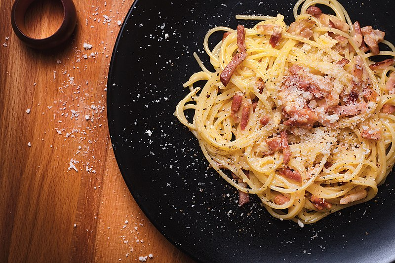

Carbonara

What is Carbonara?
"Carbonara is a pasta dish traditionally made with guanciale
(A form of cured pork), eggs, hard cheese and black pepper.
It takes its name from and was popularised in the 20th Century."
"The cheese used is usually either Pecorino Romano, parmesan,
or a combination of both. This is what gives the dish its signature
creamy texture. In order to save time or effort, they can be substituted
or supplemented by the use of heavy cream; at the cost of taste quality."
Ingredients
- Spaghetti
- Coarse sea salt
- 3 Eggs
- 60g each Pecorino Romano or parmesan; or 30g combined
- guanciale, or bacon
- black pepper
Recipe
- grate your cheese(s)
- seperate the yolks from your eggs and beat them
- cut your pork into 1cm cubes or short strips
- Bring a pot of water to the boil,
add a liberal pinch of salt and pasta,
to portion
- add your cubed pork to a cold pan
and raise to medium heat,
stirring occassionally for medium browning
- reduce the heat just before your pork has
fully cooked
- onceal dente,remove and drain your pasta
from the pot, quickly adding it to the pan
- add 1-2 tablespoons of the pasta water to the pan,
and while stirring briskly, slowly pour your egg mixture
over the pasta and bacon mixture
- take care to keep the pan's contents moving to avoid
cooking the eggs before they've had a chance to emulsify
- add the grated cheese to the warm pan,
this will give the dish its signature creamy texture
- plate, serve, and enjoy!